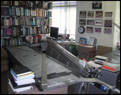
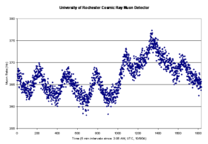
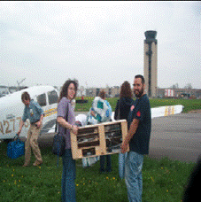

Quick Navigation
Air Showers @ U of R
Big Paddles @ U of R
Hidden Ceilings @ Nazareth
Airplane Flight @ Byron-Bergen
Halloween Forbush Decrease @ Pittsford Mendon
More about PARTICLE
|
August 2005 – Angles and Air Showers, Muon Investigations
at the U of R
Students
participating in the Research
Experience for High School Students and their teachers
explored the nature of muons in atmospheric showers along
with U of R physicists during the summer of 2005. They utilized
the “Big Paddles” to create an array of detectors,
and determined not only that the muon air showers they detected
with this array came down at steep angles, typically within
45 degrees of vertical, but also these showers are more strongly
favored toward steep angles than individual muon detections.
Additionally, the team found out that the showers do not seem
to come from any one orientation more or less frequently than
any other.
To learn more, read a summary
of the air shower experiment. Also, view U of R undergraduate
Kara Morris’ presentation
and the high school student’s poster. |
October 2004 – The “Mother of all Paddles”
is Up and Running
The new giant muon telescope measures an astounding
0.75 meters x 3.0 meters (~2.25 feet x 9 feet). It is located
in the attic of the University of Rochester's Bausch and Lomb
Hall (the physics building). The detector is currently collecting
data at about 100 times the rate of the small, classroom sized
detectors. The higher rate of data collection should yield
much better results than can be collected with the small paddles.
Preliminary data analysis shows a stronger muon rate and pressure
correlation than previous data had suggested.
For more information or to download data, click here.
Also check out Joe
Willie's page for a look at the analysis. |
June 2004 - Students Uncover Hidden Mysteries at Nazareth
Academy
 Inspired by archaeologists searching Mayan temples for
secret chambers, the AP Physics class at Nazareth Academy
set out to map their school based on muon rates. They were
in for a surprise when the auditorium showed much lower muon
rates than the surrounding hallways. The auditorium was expected
to have higher rates because it was presumed to have less
material overhead than in the hallways. Investigative research
led the students to discover there were several "extra"
roofs from renovations and roof repairs above the auditorium. Inspired by archaeologists searching Mayan temples for
secret chambers, the AP Physics class at Nazareth Academy
set out to map their school based on muon rates. They were
in for a surprise when the auditorium showed much lower muon
rates than the surrounding hallways. The auditorium was expected
to have higher rates because it was presumed to have less
material overhead than in the hallways. Investigative research
led the students to discover there were several "extra"
roofs from renovations and roof repairs above the auditorium.
To see the students’ presentation and learn more, click
here. |
May 2004 – Byron Bergen Students Explore Relativity
Students
from Byron Bergen High School, with support from the New
York State Section of the APS, set out to measure the
lifetime of muons generated from cosmic rays. The primary
goal of the experiment was to give a concrete example of particle
physics and relativity in addition to a view into the experimental
process. The primary science objective was to verify relativistic
time dilation in muons. Students achieved this by sending
their Black Box on a small locally chartered plane. The airplane
flew at different altitudes so as to see how the flux of muons
from cosmic rays varied at different heights. Students measured
how much the atmosphere slowed our stopped muons and corrected
for this by taking into account atmospheric density at different
altitudes.
Click here
to read the project summary or click here
to view the students’ presentation |
October 2003 - The Haunting of the Halloween Forbush Decrease
 Solar
FlareJoe Willie's class at Pittsford-Mendon observed a huge
decrease in the muon rate between October 23 and November
4, 2003. As they soon discovered, the decrease was due to
an extreme amount of solar activity, now known as the Great
Halloween Solar Storm of 2003. The high energy particles reached
the Earth in about one-third the time they usually takes and
caused an increase in geomagnetic activity. The students saw
a 10% drop in muon rate due to the solar activity and a two
week recovery period before muon rates were back to normal. Solar
FlareJoe Willie's class at Pittsford-Mendon observed a huge
decrease in the muon rate between October 23 and November
4, 2003. As they soon discovered, the decrease was due to
an extreme amount of solar activity, now known as the Great
Halloween Solar Storm of 2003. The high energy particles reached
the Earth in about one-third the time they usually takes and
caused an increase in geomagnetic activity. The students saw
a 10% drop in muon rate due to the solar activity and a two
week recovery period before muon rates were back to normal.
To see the data and learn more, see Joe
Willie's website. |
More about PARTICLE
In the Press: Democrat and Chronicle, August 10, 2000
Susen Clark’s AAPT Presentation on Cosmic Ray Research in
the Rochester Area (PowerPoint)
(pdf)
Rachael Anderman’s Master's Thesis: An Evaluation of PARTICLE (pdf)
Kevin McFarland's STANYS
Conference Presentation on Particle Physics |
| |
|